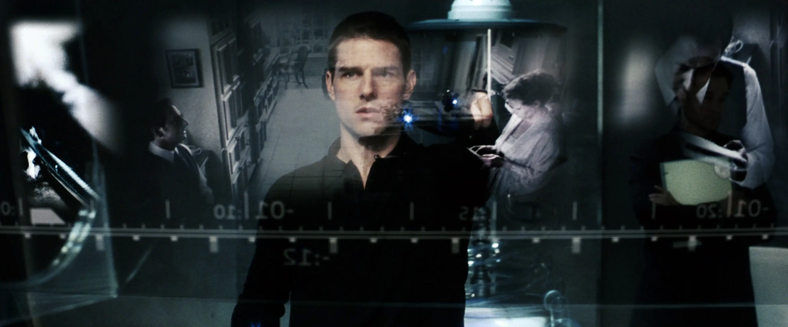
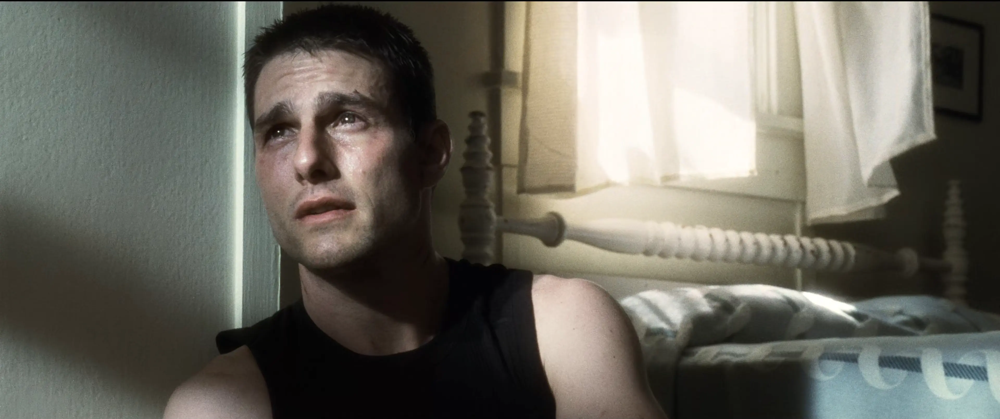
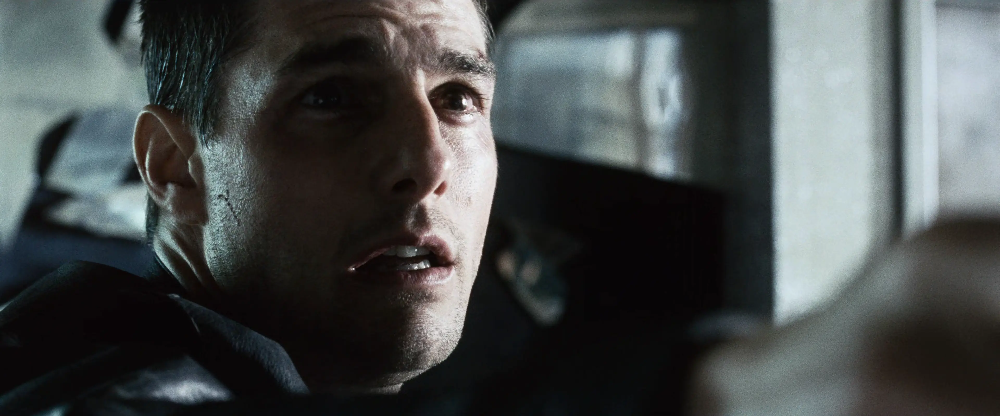

Minority Report
- Standard
A tale of grief hidden in a sci-fi movie.
You can choose.
Science fiction films confront us with visions from the future. It’d be easy for a filmmaker to fixate on dazzling us with an audiovisual experience — and lose sight of what actually keeps us in our seats. In 2002’s Minority Report, however, we are in the hands of Steven Spielberg, doing what he was born to do.
Minority Report unsettles us from the beginning. A desaturated vision moves back-and-forth through time: a man and woman kiss, razor-sharp scissors lie on the bathroom floor, a tub of bloody water crashes up, a third person — another man — ascends a staircase. He enters a bedroom. Then, we realize: he is witnessing his wife’s affair. In his panic, he turns violent.
John Anderton (Tom Cruise), the chief of Washington D.C.’s Precrime unit, analyzes this vision, scanning every corner for an address. This is how crime scenes are presented in the future.

How did he get such personal material? Three “Precognitives.” These are kids with god-like abilities to pre-visualize the time and place of every murder in D.C. With them, Anderton can stop murders before they happen. This is the new American justice system.
The notion of Precrime asks the audience an intriguing question: What if we could prevent every murder in America, but only if we completely surrendered our privacy? Would such an enormous gain be worth the enormous cost? This is the opening lure of Minority Report.
With this setup in the year 2054, Spielberg has the opportunity to imagine what the rest of the world looks like: mag-lev self-driving cars that defy gravity, Eye-Dentiscan devices that identify anyone by scanning their iris, hologram greeters at the Gap that remember your purchase history, and spatial computer operating systems that require hand gestures and movement.
Minority Report is prescient. In the year 2026, each of these creations is closer to reality than fiction. To inform the story, Spielberg hosted a 3-day think-tank in 1999 with experts in advertising, computer science, biomedicine, and architecture. The topic? A discussion of what their fields would fruit over the next fifty years. Spielberg kept a tape recorder on.
Their prognostications have mostly come true. The Precrime unit’s jet packs and hovercraft are missing, but the remaining list speaks for itself. Self-driving cars are today’s robotaxis. Identification systems have proliferated via facial recognition (like in TSA security lines). All of our internet browsing history is used to serve us personalized advertising online. Spatial computers like the Apple Vision Pro have begun coming to consumers.
Even though these elements greatly enhance the world, they are ultimately peripheral. Minority Report is a showcase of inordinate restraint from a filmmaker who properly doses the futuristic elements of a sci-fi story. What drew me into the world was Precrime and Eye-Dentiscan. What made me stay was the character of John Anderton.
Spoilers Ahead
Anderton has a hidden life. He is recovering from trauma which occurred six years before the story opens. What happened? We do not know.
We piece together the fragments — a father who lives alone, family photographs depicting what was, spatial video recordings that a father returns to at night, a look of pain. Anderton’s world of grief leads him to Precrime, a desire to prevent anyone else from suffering like he did. When Anderton grieves, so do we.

The three finest scenes in Minority Report encapsulate the film itself: They are about the gaping hole in a father’s heart and whether Precrime is an acceptable practice in the American way of justice.
In the first scene, Anderton retires to his home and plays spatial video recordings. A life-size version of his six-year-old son, Sean, appears. He’s on the beach, trying to run, and talking to his dad. Anderton talks to Sean, like he’s standing right in front of him.
- ANDERTON
- I love you.
- SEAN
- I love you, Daddy.
But like any video, it reaches “END OF FILE” status and ends. To cope, Anderton inhales “neuroin,” the only way he can pretend these recordings are his reality.
Dazed from the drug, Anderton plays one more memory. A life-size version of his ex-wife, Lara, appears. Composer John Williams’s score begins: a soft feminine voice hangs in the air. They aren’t together anymore, but Anderton relives the past when Sean was still there.
- LARA
- Sweetie, why don’t you put the camera down and come and watch the rain with me?
John gleams. But suddenly, the video reaches “END OF FILE” status. Emptiness returns. It is just a memory again.
This early scene, more than any other, bonds us to Anderton as a protagonist. How can someone with such a happy family lose it all? What happened to them?
The second scene is a traumatic memory. By this point, we know what will happen, but not how. Anderton and his son, Sean, are at a public pool in Baltimore, enjoying a friendly father-and-son breath-holding competition. In their banter, we feel the love.
- ANDERTON
- You want to time me? You’ve got to be kidding. There’s no possible way I can beat 21.56 seconds.
Anderton jumps into the pool and gives Sean a watch.
- SEAN
- 3. 2. 1. Go!
Anderton steals a kiss on Sean’s cheek and sinks into the water. Underwater, the feminine voice from the memories returns. Anderton smiles at the kids diving in the shallow water, but then — the watch falls into water.
Anderton rises with a smile. He must be thinking, You goof.
- ANDERTON
- Sean?
He doesn’t see his son anywhere. The camera frantically paces the crowd, darting here, then there. Adults leisurely stroll, kids chase each other.
- ANDERTON
- I’m looking for my son. Have you seen a boy in a red bathing suit?
No one senses anything amiss. The camera darts faster.
- ANDERTON
- Sean!
No one is helping. He isn’t there. The panic sets in — and Anderton lets out an unforgettable cry.
- ANDERTON
- SEAN!
Before this scene, Minority Report reveals Anderton’s son was kidnapped at a public pool. Yet, the manner in which it happens remains shocking. This is part writing, part performance, and part cinematography.
The pool scene plays from John Anderton’s perspective. When he jumps into the water, he takes his eyes off of Sean for a few seconds. When the watch falls and he rises, Sean isn’t there. Sean disappears so quickly — and in such a public place — that we are beside ourselves.
Tom Cruise’s performance transforms from effervescent to panicked. The cinematography goes first-person, using a smaller shutter angle to reduce the motion blur — making the camera movements feel adrenalized. We stop seeing Anderton as much as hear his voice. When Anderton calls out his son’s name, Cruise finds an emotional register that ignites alarm.
This scene lasts less than 2 minutes, yet packs a high concentration of creative thought. Cruise conveys the panic. Spielberg and cinematographer Janusz Kaminski resurrect a camera trick from the D-Day invasion in 1998’s Saving Private Ryan. By the scene’s conclusion, we feel Anderton’s trauma — and deeply understand why he has not recovered after six years. Without it, the finest scene in Minority Report does not work.
The third and finest scene is the fulfillment of prophecy. The Precogs have seen that John Anderton will murder a man he’s never met before. Someone named Leo Crow. Will Anderton murder Crow?
Anderton and others have replayed the Precogs’ vision many times. We know it well. A government housing tower, a studio apartment, a female Precog standing in the corner, Anderton in cold sweat holding a gun saying,
- ANDERTON
- Goodbye, Crow.
The third scene begins when we start seeing the signs: The tower, the apartment, and Agatha, the Precog. But who’s Leo Crow? No one knows.
Until, Anderton finds a collection of photographs on the bed. They’re all of kids. He picks through — and finds his son.
- ANDERTON
- Oh God. This is Sean. My son.
That familiar, feminine voice returns. Looking at the photo, he talks to Agatha.
- ANDERTON
- Every day for the last six years I've thought about only two things. The first is what my son would look like if he were alive today. If I would recognize him if I saw him on the street. The second is what I would do to the man who took him.
Anderton pulls out a photo strip, with a man sitting beside his son. It’s Leo Crow.
- ANDERTON
- I am going to kill this man.
The panic sets in again. Leo Crow walks into the room. Anderton charges at him — punching him, kicking him, kneeing him, slamming him on the ground. In his fury, Anderton yells,
- ANDERTON
- WHERE IS HE?!
Crow gasps for air, but he answers.
- CROW
- I put him in a barrel and sunk him in the bay.
Anderton rolls over, reeling, unable to comprehend. Why? Why? He cries.
Then, he realizes what he must do. Crow backs into the window — and Anderton unholsters his gun. Anderton breathes heavy, gritting his teeth, itching to pull the trigger and send this man plummeting to his death.
It’s over. The unthinkable action, that Anderton would willingly murder a man he never met, is imminent. The violins shriek; a horn tempts Anderton’s darker nature. Anderton has seen his own future, so the wisest Precog reminds him:
- AGATHA
- You can choose... you can choose.

Suddenly, an alarm goes off on Anderton’s watch. He has surpassed the predicted time of Crow’s murder — yet Crow still stands. The music is gone. Anderton’s breath is heavy. He starts to whisper, his voice breaking:
- ANDERTON
- You have the right to remain silent. Anything you say or do can be used against you in a court of law. You have the right to an attorney. If you cannot afford one, we will appoint one to you. Do you understand these rights?
John Anderton is an ordinary man, thrown into extraordinary circumstances. His son was taken from him. He was chosen to lead Precrime, a new iteration of the American justice system. Then, the same system accuses him of killing a man he never met.
At the height of his rage, he refuses to yield, choosing to announce Crow’s Miranda Rights. Anderton converts himself from a champion of Precrime to a guardian of the American justice system — with all its imperfections. This kind of moment, where you feel proud to be an American when you least suspect it, is a Spielberg Moment.
Anderton could have taken the easy or expeditious route, but he chooses the one that is right. Anderton upholds the American justice system at tremendous personal cost — making Minority Report’s Spielberg Moment one of the greatest of them all.
In great science-fiction films, the world is so palpable that the audience doesn’t think to doubt — just experience. World-building intrigues an audience, but it won’t keep them in their seats. Emotion is why audiences stay and why they return.
With Minority Report, Steven Spielberg embraces this lineage, building a story world with a prescient view of America in 2054. Then, he fills it with John Anderton’s grief, making us believe in Precrime. But we soon realize that our belief in the American justice system rises and falls with John Anderton.
When we see it all together onscreen, there is nothing we can do except surrender to this work of art.